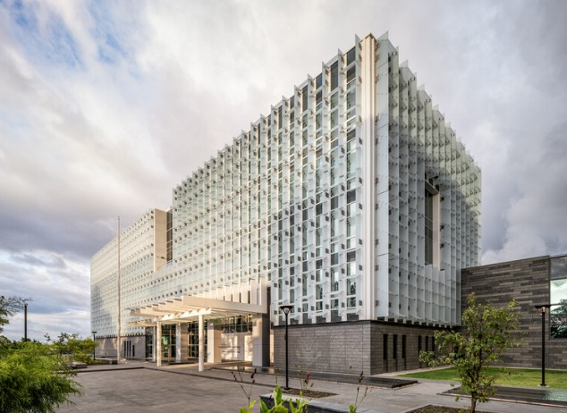

Diseño
urbano.
Diseñamos espacios públicos que fomentan la convivencia, la movilidad sostenible y la identidad comunitaria, desde plazas y parques lineales hasta propuestas de regeneración urbana integral.

Diseñamos ciudad para las personas.
Nuestro trabajo urbano integra espacio público, movilidad, regeneración e infraestructura verde para crear entornos accesibles, seguros y con identidad.
Espacios públicos
Diseño de espacios públicos accesibles y seguros.
Movilidad urbana
Planes de movilidad urbana sostenible.
Regeneración
Regeneración de centros históricos y zonas degradadas.
Impacto y participación
Estudios de impacto urbano y participación ciudadana.
Infraestructura verde
Diseño de corredores verdes y ciclovías.
Del espacio público a la escala urbana.
Las soluciones pueden abordar desde intervenciones puntuales en plazas y parques hasta estrategias de movilidad, regeneración urbana y corredores verdes.
Plazas y espacios públicos
Propuestas orientadas a la accesibilidad, seguridad y convivencia.
Movilidad sostenible
Planes urbanos que incorporan movilidad sostenible y ciclovías.
Regeneración urbana
Intervenciones para centros históricos y zonas degradadas.
Corredores verdes
Diseño de corredores verdes como parte de la estructura urbana.
Diseñemos un espacio que conecte personas y ciudad.
Cuéntanos el alcance de tu proyecto y conversemos sobre la solución urbanística que necesitas.